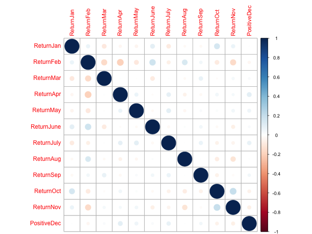

Assignment 6. The Analytics Edge
Table of Contents
- 1. Document clustering with daily KOS
[100%]- 1.1. DONE Problem 1.1 - Hierarchical Clustering (1 point possible)
- 1.2. DONE Problem 1.2 - Hierarchical Clustering (1 point possible)
- 1.3. DONE Problem 1.3 - Hierarchical Clustering (1 point possible)
- 1.4. DONE Problem 1.4 - Hierarchical Clustering (3 points possible)
- 1.5. DONE Problem 1.5 - Hierarchical Clustering (1 point possible)
- 1.6. DONE Problem 1.6 - Hierarchical Clustering (3 points possible)
- 1.7. DONE Problem 2.1 - K-Means Clustering (3 points possible)
- 1.8. DONE Problem 2.2 - K-Means Clustering (2 points possible)
- 1.9. DONE Problem 2.3 - K-Means Clustering (1 point possible)
- 1.10. DONE Problem 2.4 - K-Means Clustering (1 point possible)
- 1.11. DONE Problem 2.5 - K-Means Clustering (1 point possible)
- 1.12. DONE Problem 2.6 - K-Means Clustering (1 point possible)
- 2. Market Segmentation For Airlines
[100%]- 2.1. DONE Problem 1.1 - Normalizing the Data (2 points possible)
- 2.2. DONE Problem 1.2 - Normalizing the Data (1 point possible)
- 2.3. DONE Problem 1.3 - Normalizing the Data (2 points possible)
- 2.4. DONE Problem 2.1 - Hierarchical Clustering (1 point possible)
- 2.5. DONE Problem 2.2 - Hierarchical Clustering (1 point possible)
- 2.6. DONE Problem 2.3 - Hierarchical Clustering (2 points possible)
- 2.7. DONE Problem 2.4 - Hierarchical Clustering (2 points possible)
- 2.8. DONE Problem 2.5 - Hierarchical Clustering (2 points possible)
- 2.9. DONE Problem 2.6 - Hierarchical Clustering (2 points possible)
- 2.10. DONE Problem 2.7 - Hierarchical Clustering (2 points possible)
- 2.11. DONE Problem 3.1 - K-Means Clustering (1 point possible)
- 2.12. DONE Problem 3.2 - K-Means Clustering (1 point possible)
- 3. Predicting Stock Returns with Cluster-Then-Predict
[100%]- 3.1. DONE Problem 1.1 - Exploring the Dataset (1 point possible)
- 3.2. DONE Problem 1.2 - Exploring the Dataset (1 point possible)
- 3.3. DONE Problem 1.3 - Exploring the Dataset (1 point possible)
- 3.4. DONE Problem 1.4 - Exploring the Dataset (2 points possible)
- 3.5. DONE Problem 2.1 - Initial Logistic Regression Model (2 points possible)
- 3.6. DONE Problem 2.2 - Initial Logistic Regression Model (1 point possible)
- 3.7. DONE Problem 2.3 - Initial Logistic Regression Model (1 point possible)
- 3.8. DONE Problem 3.1 - Clustering Stocks (1 point possible)
- 3.9. DONE Problem 3.2 - Clustering Stocks (2 points possible)
- 3.10. DONE Problem 3.3 - Clustering Stocks (1 point possible)
- 3.11. DONE Problem 3.4 - Clustering Stocks (1 point possible)
- 3.12. DONE Problem 3.5 - Clustering Stocks (1 point possible)
- 3.13. DONE Problem 4.1 - Cluster-Specific Predictions (1 point possible)
- 3.14. DONE Problem 4.2 - Cluster-Specific Predictions (2 points possible)
- 3.15. DONE Problem 4.3 - Cluster-Specific Predictions (6 points possible)
- 3.16. DONE Problem 4.4 - Cluster-Specific Predictions (1 point possible)
The homework of the unit 6 of the Analytics Edge.
1 Document clustering with daily KOS [100%]
Document clustering, or text clustering, is a very popular application of clustering algorithms. A web search engine, like Google, often returns thousands of results for a simple query. For example, if you type the search term "jaguar" into Google, around 200 million results are returned. This makes it very difficult to browse or find relevant information, especially if the search term has multiple meanings. If we search for "jaguar", we might be looking for information about the animal, the car, or the Jacksonville Jaguars football team.
Clustering methods can be used to automatically group search results into categories, making it easier to find relavent results. This method is used in the search engines PolyMeta and Helioid, as well as on FirstGov.gov, the official Web portal for the U.S. government. The two most common algorithms used for document clustering are Hierarchical and k-means.
In this problem, we'll be clustering articles published on Daily Kos, an American political blog that publishes news and opinion articles written from a progressive point of view. Daily Kos was founded by Markos Moulitsas in 2002, and as of September 2014, the site had an average weekday traffic of hundreds of thousands of visits.
The file dailykos.csv contains data on 3,430 news articles or blogs that have been posted on Daily Kos. These articles were posted in 2004, leading up to the United States Presidential Election. The leading candidates were incumbent President George W. Bush (republican) and John Kerry (democratic). Foreign policy was a dominant topic of the election, specifically, the 2003 invasion of Iraq.
Each of the variables in the dataset is a word that has appeared in at least 50 different articles (1,545 words in total). The set of words has been trimmed according to some of the techniques covered in the previous week on text analytics (punctuation has been removed, and stop words have been removed). For each document, the variable values are the number of times that word appeared in the document.
1.1 DONE Problem 1.1 - Hierarchical Clustering (1 point possible)
Let's start by building a hierarchical clustering model. First, read the data set into R.
1.1.1 Download the data sets
In this part we can download the data
library(parallel) if(!file.exists("../data")) { dir.create("../data") } fileUrl <- "https://courses.edx.org/asset-v1:MITx+15.071x_2a+2T2015+type@asset+block/dailykos.csv" fileName <- "dailykos.csv" dataPath <- "../data" filePath <- paste(dataPath, fileName, sep = "/") if(!file.exists(filePath)) { download.file(fileUrl, destfile = filePath, method = "curl") } list.files("../data")
[1] "AirlinesCluster.csv" "AnonymityPoll.csv" [3] "baseball.csv" "BoeingStock.csv" [5] "boston.csv" "ClaimsData.csv" [7] "ClaimsData.csv.zip" "climate_change.csv" [9] "clinical_trial.csv" "ClusterMeans.ods" [11] "CocaColaStock.csv" "CountryCodes.csv" [13] "CPSData.csv" "dailykos.csv" [15] "eBayiPadTest.csv" "eBayiPadTrain.csv" [17] "emails.csv" "energy_bids.csv" [19] "flower.csv" "FluTest.csv" [21] "FluTrain.csv" "framingham.csv" [23] "gerber.csv" "GEStock.csv" [25] "healthy.csv" "IBMStock.csv" [27] "loans_imputed.csv" "loans.csv" [29] "MetroAreaCodes.csv" "movieLens.txt" [31] "mvtWeek1.csv" "NBA_test.csv" [33] "NBA_train.csv" "parole.csv" [35] "pisa2009test.csv" "pisa2009train.csv" [37] "PollingData_Imputed.csv" "PollingData.csv" [39] "ProcterGambleStock.csv" "quality.csv" [41] "README.md" "SampleSubmission.csv" [43] "songs.csv" "stevens.csv" [45] "StocksCluster.csv" "stopwords.txt" [47] "tumor.csv" "tweets.csv" [49] "USDA.csv" "WHO_Europe.csv" [51] "WHO.csv" "wiki.csv" [53] "wine_test.csv" "wine.csv"
1.1.2 Load the data set
writeLines(" Loading data set into their data frame...") dailykos <- read.table("../data/dailykos.csv", sep = ",", header = TRUE)
Loading data set into their data frame...
Then, compute the distances (using method="euclidean"), and use hclust to build the model (using method="ward.D"). You should cluster on all of the variables.
writeLines("\n :: Compute distances...") kosDist <- dist(dailykos, method = "euclidean") writeLines("\n :: Hierarchical clustering...") kosHierClust <- hclust(kosDist, method = "ward.D")
:: Compute distances... :: Hierarchical clustering...
Running the dist function will probably take you a while. Why? Select all that apply.
1.1.3 Answer [2/4]
writeLines("\n :: Dimensions of the kosDist matrix:") dim(kosDist) writeLines("\n :: Summary of the kosDist matrix:") min(kosDist) writeLines("\n :: Dimensions of distance vector:") n <- length(kosDist) n writeLines("\n :: The number of calculations:") (n*(n - 1)) / 2
:: Dimensions of the kosDist matrix: NULL :: Summary of the kosDist matrix: [1] 1.732051 :: Dimensions of distance vector: [1] 5880735 :: The number of calculations: [1] 1.729152e+13
[X]We have a lot of observations, so it takes a long time to compute the distance between each pair of observations.[X]We have a lot of variables, so the distance computation is long.[ ]Our variables have a wide range of values, so the distances are more complicated.[ ]The euclidean distance is known to take a long time to compute, regardless of the size of the data.
Explanation
You can read in the data set, compute the distances, and build the hierarchical clustering model by using the following commands:
dailykos = read.csv("dailykos.csv")
kosDist = dist(dailykos, method="euclidean")
kosHierClust = hclust(kosDist, method="ward.D")
The distance computation can take a long time if you have a lot of observations and/or if there are a lot of variables. As we saw in recitation, it might not even work if you have too many of either!
1.2 DONE Problem 1.2 - Hierarchical Clustering (1 point possible)
Plot the dendrogram of your hierarchical clustering model. Just looking at the dendrogram, which of the following seem like good choices for the number of clusters? Select all that apply.
Figure 1: Dailykos dendrogram plot.
1.2.1 Answer [2/4]
[X]2[X]3[ ]5[ ]6
Explanation
You can plot the dendrogram with the command:
plot(kosHierClust)
where kosHierClust is the name of your clustering model.
The choices 2 and 3 are good cluster choices according to the dendrogram, because there is a lot of space between the horizontal lines in the dendrogram in those cut off spots (draw a horizontal line across the dendrogram where it crosses 2 or 3 vertical lines). The choices of 5 and 6 do not seem good according to the dendrogram because there is very little space.
1.3 DONE Problem 1.3 - Hierarchical Clustering (1 point possible)
In this problem, we are trying to cluster news articles or blog posts into groups. This can be used to show readers categories to choose from when trying to decide what to read. Just thinking about this application, what are good choices for the number of clusters? Select all that apply.
1.3.1 Answer [2/4]
[ ]2[ ]3[X]7[X]8
Explanation
Thinking about the application, it is probably better to show the reader more categories than 2 or 3. These categories would probably be too broad to be useful. Seven or eight categories seems more reasonable.
1.4 DONE Problem 1.4 - Hierarchical Clustering (3 points possible)
Let's pick 7 clusters. This number is reasonable according to the dendrogram, and also seems reasonable for the application. Use the cutree function to split your data into 7 clusters.
Now, we don't really want to run tapply on every single variable when we have over 1,000 different variables. Let's instead use the subset function to subset our data by cluster. Create 7 new datasets, each containing the observations from one of the clusters.
Figure 2: Split daily kos data in seven clusters
writeLines("\n :: Subsetting in 7 clusters...") clusterGroups <- cutree(kosHierClust, k <- 7) hcluster1 <- subset(dailykos, clusterGroups==1) hcluster2 <- subset(dailykos, clusterGroups==2) hcluster3 <- subset(dailykos, clusterGroups==3) hcluster4 <- subset(dailykos, clusterGroups==4) hcluster5 <- subset(dailykos, clusterGroups==5) hcluster6 <- subset(dailykos, clusterGroups==6) hcluster7 <- subset(dailykos, clusterGroups==7)
null device
1
:: Select 7 clusters:
null device
1
:: Subsetting in 7 clusters...
1.4.1 Question a
How many observations are in cluster 3?
1.4.1.1 Answer
writeLines("\n :: The cluster 3 dimensions:")
dim(hcluster3)
:: The cluster 3 dimensions: [1] 374 1545
1.4.2 Question b
writeLines("\n :: Number of observations by cluster:")
c(nrow(hcluster1), nrow(hcluster2), nrow(hcluster3), nrow(hcluster4),
nrow(hcluster5), nrow(hcluster6), nrow(hcluster7))
:: Number of observations by cluster: [1] 1266 321 374 139 407 714 209
Which cluster has the most observations?
1.4.2.1 Answer
[X]Cluster 1[ ]Cluster 2[ ]Cluster 3[ ]Cluster 4[ ]Cluster 5[ ]Cluster 6[ ]Cluster 7
1.4.3 Question c
Which cluster has the fewest observations?
1.4.3.1 Answer
[ ]Cluster 1[ ]Cluster 2[ ]Cluster 3[X]Cluster 4[ ]Cluster 5[ ]Cluster 6[ ]Cluster 7
1.5 DONE Problem 1.5 - Hierarchical Clustering (1 point possible)
Instead of looking at the average value in each variable individually,
we'll just look at the top 6 words in each cluster. To do this for
cluster 1, type the following in your R console (where HierCluster1
should be replaced with the name of your first cluster subset):
tail(sort(colMeans(HierCluster1)))
writeLines("\n :: The top 6 words in each cluster:")
tail(sort(colMeans(hcluster1)))
:: The top 6 words in each cluster:
state republican poll democrat kerry bush
0.7575039 0.7590837 0.9036335 0.9194313 1.0624013 1.7053712
This computes the mean frequency values of each of the words in
cluster 1, and then outputs the 6 words that occur the most
frequently. The colMeans function computes the column (word) means,
the sort function orders the words in increasing order of the mean
values, and the tail function outputs the last 6 words listed, which
are the ones with the largest column means.
What is the most frequent word in this cluster, in terms of average value? Enter the word exactly how you see it in the output:
1.5.1 Answer
bush
Explanation
After running the R command given above, we can see that the most frequent word on average is "bush". This corresponds to President George W. Bush.
1.6 DONE Problem 1.6 - Hierarchical Clustering (3 points possible)
Now repeat the command given in the previous problem for each of the other clusters, and answer the following questions.
writeLines("\n :: Most frequent word for cluster 1:") tail(sort(colMeans(hcluster1))) writeLines("\n :: Most frequent word for cluster 2:") tail(sort(colMeans(hcluster2))) writeLines("\n :: Most frequent word for cluster 3:") tail(sort(colMeans(hcluster3))) writeLines("\n :: Most frequent word for cluster 4:") tail(sort(colMeans(hcluster4))) writeLines("\n :: Most frequent word for cluster 5:") tail(sort(colMeans(hcluster5))) writeLines("\n :: Most frequent word for cluster 6:") tail(sort(colMeans(hcluster6))) writeLines("\n :: Most frequent word for cluster 7:") tail(sort(colMeans(hcluster7)))
:: Most frequent word for cluster 1:
state republican poll democrat kerry bush
0.7575039 0.7590837 0.9036335 0.9194313 1.0624013 1.7053712
:: Most frequent word for cluster 2:
bush democrat challenge vote poll november
2.847352 2.850467 4.096573 4.398754 4.847352 10.339564
:: Most frequent word for cluster 3:
elect parties state republican democrat bush
1.647059 1.665775 2.320856 2.524064 3.823529 4.406417
:: Most frequent word for cluster 4:
campaign voter presided poll bush kerry
1.431655 1.539568 1.625899 3.589928 7.834532 8.438849
:: Most frequent word for cluster 5:
american presided administration war iraq
1.090909 1.120393 1.230958 1.776413 2.427518
bush
3.941032
:: Most frequent word for cluster 6:
race bush kerry elect democrat poll
0.4579832 0.4887955 0.5168067 0.5350140 0.5644258 0.5812325
:: Most frequent word for cluster 7:
democrat clark edward poll kerry dean
2.148325 2.497608 2.607656 2.765550 3.952153 5.803828
1.6.1 Question a
Which words best describe cluster 2?
1.6.1.1 Answer
[ ]november, vote, edward, bush[ ]kerry, bush, elect, poll[X]november, poll, vote, challenge[ ]bush, democrat, republican, state
1.6.2 Question b
Which cluster could best be described as the cluster related to the Iraq war?
1.6.2.1 Answer
[ ]Cluster 1[ ]Cluster 2[ ]Cluster 3[ ]Cluster 4[X]Cluster 5[ ]Cluster 6[ ]Cluster 7
1.6.3 Question c
In 2004, one of the candidates for the Democratic nomination for the President of the United States was Howard Dean, John Kerry was the candidate who won the democratic nomination, and John Edwards with the running mate of John Kerry (the Vice President nominee). Given this information, which cluster best corresponds to the democratic party?
[ ]Cluster 1[ ]Cluster 2[ ]Cluster 3[ ]Cluster 4[ ]Cluster 5[ ]Cluster 6[X]Cluster 7
Explanation
You can repeat the command on each of the clusters by typing the following:
tail(sort(colMeans(HierCluster2)))
tail(sort(colMeans(HierCluster3)))
tail(sort(colMeans(HierCluster4)))
tail(sort(colMeans(HierCluster5)))
tail(sort(colMeans(HierCluster6)))
tail(sort(colMeans(HierCluster7)))
You can see that the words that best describe Cluster 2 are november, poll, vote, and challenge. The most common words in Cluster 5 are bush, iraq, war, and administration, so it is the cluster that can best be described as corresponding to the Iraq war. And the most common words in Cluster 7 are dean, kerry, poll, and edward, so it looks like the democratic cluster.
1.7 DONE Problem 2.1 - K-Means Clustering (3 points possible)
Now, run k-means clustering, setting the seed to 1000 right before you run the kmeans function. Again, pick the number of clusters equal to 7. You don't need to add the iters.max argument.
Subset your data into the 7 clusters (7 new datasets) by using the "cluster" variable of your kmeans output.
set.seed(1000) kosKmeans <- kmeans(dailykos, 7) kosCluster <- kosKmeans$cluster sort(table(kosCluster), decreasing = TRUE)
kosCluster 4 6 7 3 5 1 2 2063 329 308 277 163 146 144
1.7.1 Question a
How many observations are in Cluster 3?
1.7.1.1 Answer
277
1.7.2 Question b
Which cluster has the most observations?
1.7.2.1 Answer
[ ]Cluster 1[ ]Cluster 2[ ]Cluster 3[X]Cluster 4[ ]Cluster 5[ ]Cluster 6[ ]Cluster 7
1.7.3 Question
Which cluster has the fewest number of observations?
1.7.3.1 Answer
[ ]Cluster 1[X]Cluster 2[ ]Cluster 3[ ]Cluster 4[ ]Cluster 5[ ]Cluster 6[ ]Cluster 7
Explanation
You can run k-means clustering by using the following commands:
set.seed(1000)
KmeansCluster = kmeans(dailykos, centers=7)
Then, you can subset your data into the 7 clusters by using the following commands:
KmeansCluster1 = subset(dailykos, KmeansCluster$cluster == 1)
KmeansCluster2 = subset(dailykos, KmeansCluster$cluster == 2)
KmeansCluster3 = subset(dailykos, KmeansCluster$cluster == 3)
KmeansCluster4 = subset(dailykos, KmeansCluster$cluster == 4)
KmeansCluster5 = subset(dailykos, KmeansCluster$cluster == 5)
KmeansCluster6 = subset(dailykos, KmeansCluster$cluster == 6)
KmeansCluster7 = subset(dailykos, KmeansCluster$cluster == 7)
Alternatively, you could answer these questions by looking at the
output of table(KmeansCluster$cluster).
More Advanced Approach:
There is a very useful function in R called the split
function. Given a vector assigning groups like KmeansCluster$cluster,
you could split dailykos into the clusters by typing:
KmeansCluster = split(dailykos, KmeansCluster$cluster)
Then cluster 1 can be accessed by typing KmeansCluster[ [ 1 ] ], cluster
2 can be accessed by typing KmeansCluster[ [ 2 ] ], etc. If you have a
variable in your current R session called split, you will need to
remove it with rm(split) before using the split function.
1.8 DONE Problem 2.2 - K-Means Clustering (2 points possible)
Now, output the six most frequent words in each cluster, like we did in the previous problem, for each of the k-means clusters.
writeLines("\n :: Subsetting each cluster content...") kcluster1 <- subset(dailykos, kosCluster==1) kcluster2 <- subset(dailykos, kosCluster==2) kcluster3 <- subset(dailykos, kosCluster==3) kcluster4 <- subset(dailykos, kosCluster==4) kcluster5 <- subset(dailykos, kosCluster==5) kcluster6 <- subset(dailykos, kosCluster==6) kcluster7 <- subset(dailykos, kosCluster==7) tail(sort(colMeans(kcluster3))) tail(sort(colMeans(kcluster2)))
:: Subsetting each cluster content...
administration iraqi american bush war
1.389892 1.610108 1.685921 2.610108 3.025271
iraq
4.093863
primaries democrat edward clark kerry dean
2.319444 2.694444 2.798611 3.090278 4.979167 8.277778
Now we can obtain the six most frequent words in each cluster
writeLines("\n :: Most frequent word for cluster 1:") tail(sort(colMeans(kcluster1))) writeLines("\n :: Most frequent word for cluster 2:") tail(sort(colMeans(kcluster2))) writeLines("\n :: Most frequent word for cluster 3:") tail(sort(colMeans(kcluster3))) writeLines("\n :: Most frequent word for cluster 4:") tail(sort(colMeans(kcluster4))) writeLines("\n :: Most frequent word for cluster 5:") tail(sort(colMeans(kcluster5))) writeLines("\n :: Most frequent word for cluster 6:") tail(sort(colMeans(kcluster6))) writeLines("\n :: Most frequent word for cluster 7:") tail(sort(colMeans(kcluster7)))
:: Most frequent word for cluster 1:
state iraq kerry administration presided
1.609589 1.616438 1.636986 2.664384 2.767123
bush
11.431507
:: Most frequent word for cluster 2:
primaries democrat edward clark kerry dean
2.319444 2.694444 2.798611 3.090278 4.979167 8.277778
:: Most frequent word for cluster 3:
administration iraqi american bush war
1.389892 1.610108 1.685921 2.610108 3.025271
iraq
4.093863
:: Most frequent word for cluster 4:
elect republican kerry poll democrat bush
0.6010664 0.6175473 0.6495395 0.7474552 0.7891420 1.1473582
:: Most frequent word for cluster 5:
race senate state parties republican democrat
2.484663 2.650307 3.521472 3.619632 4.638037 6.993865
:: Most frequent word for cluster 6:
democrat bush challenge vote poll november
2.899696 2.960486 4.121581 4.446809 4.872340 10.370821
:: Most frequent word for cluster 7:
presided voter campaign poll bush kerry
1.324675 1.334416 1.383117 2.788961 5.970779 6.480519
1.8.1 Question a
Which k-means cluster best corresponds to the Iraq War?
1.8.1.1 Answer
[ ]Cluster 1[ ]Cluster 2[X]Cluster 3[ ]Cluster 4[ ]Cluster 5[ ]Cluster 6[ ]Cluster 7
1.8.2 Question b
Which k-means cluster best corresponds to the democratic party? (Remember that we are looking for the names of the key democratic party leaders.)
1.8.2.1 Answer
[ ]Cluster 1[X]Cluster 2[ ]Cluster 3[ ]Cluster 4[ ]Cluster 5[ ]Cluster 6[ ]Cluster 7
1.9 DONE Problem 2.3 - K-Means Clustering (1 point possible)
For the rest of this problem, we'll ask you to compare how observations were assigned to clusters in the two different methods. Use the table function to compare the cluster assignment of hierarchical clustering to the cluster assignment of k-means clustering.
table(clusterGroups, kosCluster)
kosCluster
clusterGroups 1 2 3 4 5 6 7
1 3 11 64 1045 32 0 111
2 0 0 0 0 0 320 1
3 85 10 42 79 126 8 24
4 10 5 0 0 1 0 123
5 48 0 171 145 3 1 39
6 0 2 0 712 0 0 0
7 0 116 0 82 1 0 10
1.9.1 Question
Which Hierarchical Cluster best corresponds to K-Means Cluster 2?
1.9.1.1 Answer
[ ]Hierarchical Cluster 1[ ]Hierarchical Cluster 2[ ]Hierarchical Cluster 3[ ]Hierarchical Cluster 4[ ]Hierarchical Cluster 5[ ]Hierarchical Cluster 6[X]Hierarchical Cluster 7[ ]No Hierarchical Cluster contains at least half of the points in K-Means Cluster 2.
Explanation
From table(hierGroups, KmeansCluster$cluster), we read that \(116\)
(\(80.6\%\)) of the observations in K-Means Cluster 2 also fall in
Hierarchical Cluster 7.
1.10 DONE Problem 2.4 - K-Means Clustering (1 point possible)
1.10.1 Question
Which Hierarchical Cluster best corresponds to K-Means Cluster 3?
1.10.1.1 Answer
[ ]Hierarchical Cluster 1[ ]Hierarchical Cluster 2[ ]Hierarchical Cluster 3[ ]Hierarchical Cluster 4[X]Hierarchical Cluster 5[ ]Hierarchical Cluster 6[ ]Hierarchical Cluster 7[ ]No Hierarchical Cluster contains at least half of the points in K-Means Cluster 3.
Explanation
From table(hierGroups, KmeansCluster$cluster), we read that \(171\)
(\(61.7\%\)) of the observations in K-Means Cluster 3 also fall in
Hierarchical Cluster 5.
1.11 DONE Problem 2.5 - K-Means Clustering (1 point possible)
1.11.1 Question
Which Hierarchical Cluster best corresponds to K-Means Cluster 7?
1.11.1.1 Answer
[ ]Hierarchical Cluster 1[ ]Hierarchical Cluster 2[ ]Hierarchical Cluster 3[X]Hierarchical Cluster 4[ ]Hierarchical Cluster 5[ ]Hierarchical Cluster 6[ ]Hierarchical Cluster 7[ ]No Hierarchical Cluster contains at least half of the points in K-Means Cluster 7.
Explanation
From table(hierGroups, KmeansCluster$cluster), we read that no more
than \(123\) (\(39.9\%\)) of the observations in K-Means Cluster 7 fall in
any hierarchical cluster.
1.12 DONE Problem 2.6 - K-Means Clustering (1 point possible)
1.12.1 Question
Which Hierarchical Cluster best corresponds to K-Means Cluster 6?
1.12.1.1 Answer
[ ]Hierarchical Cluster 1[X]Hierarchical Cluster 2[ ]Hierarchical Cluster 3[ ]Hierarchical Cluster 4[ ]Hierarchical Cluster 5[ ]Hierarchical Cluster 6[ ]Hierarchical Cluster 7[ ]No Hierarchical Cluster contains at least half of the points in K-Means Cluster 6.
Explanation
From table(hierGroups, KmeansCluster$cluster), we read that \(320\)
(\(97.3\%\)) of observations in K-Means Cluster 6 fall in Hierarchical
Cluster 2.
2 Market Segmentation For Airlines [100%]
Market segmentation is a strategy that divides a broad target market of customers into smaller, more similar groups, and then designs a marketing strategy specifically for each group. Clustering is a common technique for market segmentation since it automatically finds similar groups given a data set.
In this problem, we'll see how clustering can be used to find similar groups of customers who belong to an airline's frequent flyer program. The airline is trying to learn more about its customers so that it can target different customer segments with different types of mileage offers.
The file AirlinesCluster.csv contains information on 3,999 members of the frequent flyer program. This data comes from the textbook "Data Mining for Business Intelligence," by Galit Shmueli, Nitin R. Patel, and Peter C. Bruce. For more information, see the website for the book.
There are seven different variables in the dataset, described below:
- Balance = number of miles eligible for award travel
- QualMiles = number of miles qualifying for TopFlight status
- BonusMiles = number of miles earned from non-flight bonus transactions in the past 12 months
- BonusTrans = number of non-flight bonus transactions in the past 12 months
- FlightMiles = number of flight miles in the past 12 months
- FlightTrans = number of flight transactions in the past 12 months
- DaysSinceEnroll = number of days since enrolled in the frequent flyer program
2.1 DONE Problem 1.1 - Normalizing the Data (2 points possible)
Read the dataset AirlinesCluster.csv into R and call it "airlines".
2.1.1 Download the data sets
In this part we can download the data
library(parallel) if(!file.exists("../data")) { dir.create("../data") } fileUrl <- "https://courses.edx.org/asset-v1:MITx+15.071x_2a+2T2015+type@asset+block/AirlinesCluster.csv" fileName <- "AirlinesCluster.csv" dataPath <- "../data" filePath <- paste(dataPath, fileName, sep = "/") if(!file.exists(filePath)) { download.file(fileUrl, destfile = filePath, method = "curl") } list.files("../data")
[1] "AirlinesCluster.csv" "AnonymityPoll.csv" [3] "baseball.csv" "BoeingStock.csv" [5] "boston.csv" "ClaimsData.csv" [7] "ClaimsData.csv.zip" "climate_change.csv" [9] "clinical_trial.csv" "ClusterMeans.ods" [11] "CocaColaStock.csv" "CountryCodes.csv" [13] "CPSData.csv" "dailykos.csv" [15] "eBayiPadTest.csv" "eBayiPadTrain.csv" [17] "emails.csv" "energy_bids.csv" [19] "flower.csv" "FluTest.csv" [21] "FluTrain.csv" "framingham.csv" [23] "gerber.csv" "GEStock.csv" [25] "healthy.csv" "IBMStock.csv" [27] "loans_imputed.csv" "loans.csv" [29] "MetroAreaCodes.csv" "movieLens.txt" [31] "mvtWeek1.csv" "NBA_test.csv" [33] "NBA_train.csv" "parole.csv" [35] "pisa2009test.csv" "pisa2009train.csv" [37] "PollingData_Imputed.csv" "PollingData.csv" [39] "ProcterGambleStock.csv" "quality.csv" [41] "README.md" "SampleSubmission.csv" [43] "songs.csv" "stevens.csv" [45] "StocksCluster.csv" "stopwords.txt" [47] "tumor.csv" "tweets.csv" [49] "USDA.csv" "WHO_Europe.csv" [51] "WHO.csv" "wiki.csv" [53] "wine_test.csv" "wine.csv"
2.1.2 Load the data set
writeLines(" Loading data set into their data frame...") airlines <- read.table("../data/AirlinesCluster.csv", sep = ",", header = TRUE) summary(airlines)
Loading data set into their data frame... Balance QualMiles BonusMiles BonusTrans Min. : 0 Min. : 0.0 Min. : 0 Min. : 0.0 1st Qu.: 18528 1st Qu.: 0.0 1st Qu.: 1250 1st Qu.: 3.0 Median : 43097 Median : 0.0 Median : 7171 Median :12.0 Mean : 73601 Mean : 144.1 Mean : 17145 Mean :11.6 3rd Qu.: 92404 3rd Qu.: 0.0 3rd Qu.: 23800 3rd Qu.:17.0 Max. :1704838 Max. :11148.0 Max. :263685 Max. :86.0 FlightMiles FlightTrans DaysSinceEnroll Min. : 0.0 Min. : 0.000 Min. : 2 1st Qu.: 0.0 1st Qu.: 0.000 1st Qu.:2330 Median : 0.0 Median : 0.000 Median :4096 Mean : 460.1 Mean : 1.374 Mean :4119 3rd Qu.: 311.0 3rd Qu.: 1.000 3rd Qu.:5790 Max. :30817.0 Max. :53.000 Max. :8296
2.1.3 Question a
Looking at the summary of airlines, which TWO variables have (on average) the smallest values?
2.1.3.1 Answer
[ ]Balance[ ]QualMiles[ ]BonusMiles[X]BonusTrans[ ]FlightMiles[X]FlightTrans[ ]DaysSinceEnroll
2.1.4 Question b
Which TWO variables have (on average) the largest values?
[X]Balance[ ]QualMiles[X]BonusMiles[ ]BonusTrans[ ]FlightMiles[ ]FlightTrans[ ]DaysSinceEnroll
Explanation
You can read in the data and look at the summary with the following commands:
airlines = read.csv("AirlinesCluster.csv")
summary(airlines)
For the smallest values, BonusTrans and FlightTrans are on the scale
of tens, whereas all other variables have values in the thousands.
For the largest values, Balance and BonusMiles have average values in
the tens of thousands.
2.2 DONE Problem 1.2 - Normalizing the Data (1 point possible)
In this problem, we will normalize our data before we run the clustering algorithms. Why is it important to normalize the data before clustering?
2.2.1 Answer
[ ]If we don't normalize the data, the clustering algorithms will not work (we will get an error in R).[ ]If we don't normalize the data, it will be hard to interpret the results of the clustering.[X]If we don't normalize the data, the clustering will be dominated by the variables that are on a larger scale.[ ]If we don't normalize the data, the clustering will be dominated by the variables that are on a smaller scale.
Explanation
If we don't normalize the data, the variables that are on a larger scale will contribute much more to the distance calculation, and thus will dominate the clustering.
2.3 DONE Problem 1.3 - Normalizing the Data (2 points possible)
Let's go ahead and normalize our data. You can normalize the variables
in a data frame by using the preProcess function in the "caret"
package. You should already have this package installed from Week 4,
but if not, go ahead and install it with
install.packages("caret"). Then load the package with
library(caret).
writeLines("\n :: Install new package: caret ...") ## install.packages('caret', repos='http://cran.rstudio.com/') writeLines("\n :: NOTE: Please comment after install once...") library(caret) writeLines("\n :: Library caret loaded...")
:: Install new package: caret ... :: NOTE: Please comment after install once... Loading required package: lattice Loading required package: ggplot2 :: Library caret loaded...
Now, create a normalized data frame called "airlinesNorm" by running the following commands:
The first command pre-processes the data, and the second command performs the normalization. If you look at the summary of airlinesNorm, you should see that all of the variables now have mean zero. You can also see that each of the variables has standard deviation 1 by using the sd() function.
writeLines("\n :: Preprocessing the data...") preproc <- preProcess(airlines) airlinesNorm <- predict(preproc, airlines) summary(airlinesNorm) writeLines("\n :: Standard deviation of each variable:") sd(airlinesNorm$Balance) sd(airlinesNorm$BonusMiles) sd(airlinesNorm$BonusTrans) sd(airlinesNorm$DaysSinceEnroll) sd(airlinesNorm$FlightMiles) sd(airlinesNorm$FlightTrans) sd(airlinesNorm$QualMiles) writeLines("\n :: Maximum value in the variable:") data.frame(x=sort(sapply(airlinesNorm, max))) writeLines("\n :: Minimum value in the variable:") data.frame(x=sort(sapply(airlinesNorm, min)))
:: Preprocessing the data...
Balance QualMiles BonusMiles BonusTrans
Min. :-0.7303 Min. :-0.1863 Min. :-0.7099 Min. :-1.20805
1st Qu.:-0.5465 1st Qu.:-0.1863 1st Qu.:-0.6581 1st Qu.:-0.89568
Median :-0.3027 Median :-0.1863 Median :-0.4130 Median : 0.04145
Mean : 0.0000 Mean : 0.0000 Mean : 0.0000 Mean : 0.00000
3rd Qu.: 0.1866 3rd Qu.:-0.1863 3rd Qu.: 0.2756 3rd Qu.: 0.56208
Max. :16.1868 Max. :14.2231 Max. :10.2083 Max. : 7.74673
FlightMiles FlightTrans DaysSinceEnroll
Min. :-0.3286 Min. :-0.36212 Min. :-1.99336
1st Qu.:-0.3286 1st Qu.:-0.36212 1st Qu.:-0.86607
Median :-0.3286 Median :-0.36212 Median :-0.01092
Mean : 0.0000 Mean : 0.00000 Mean : 0.00000
3rd Qu.:-0.1065 3rd Qu.:-0.09849 3rd Qu.: 0.80960
Max. :21.6803 Max. :13.61035 Max. : 2.02284
:: Standard deviation of each variable:
[1] 1
[1] 1
[1] 1
[1] 1
[1] 1
[1] 1
[1] 1
:: Maximum value in the variable:
x
DaysSinceEnroll 2.022842
BonusTrans 7.746727
BonusMiles 10.208293
FlightTrans 13.610351
QualMiles 14.223084
Balance 16.186811
FlightMiles 21.680292
:: Minimum value in the variable:
x
DaysSinceEnroll -1.9933614
BonusTrans -1.2080518
Balance -0.7303482
BonusMiles -0.7099031
FlightTrans -0.3621226
FlightMiles -0.3285622
QualMiles -0.1862754
2.3.1 Question a
In the normalized data, which variable has the largest maximum value?
2.3.1.1 Answer
[ ]Balance[ ]QualMiles[ ]BonusMiles[ ]BonusTrans[X]FlightMiles[ ]FlightTrans[ ]DaysSinceEnroll
2.3.2 Question b
In the normalized data, which variable has the smallest minimum value?
2.3.2.1 Answer
[ ]Balance[ ]QualMiles[ ]BonusMiles[ ]BonusTrans[ ]FlightMiles[ ]FlightTrans[X]DaysSinceEnroll
Explanation
After running the two lines of code to normalize the data, you can look at the summary of airlinesNorm with the command:
summary(airlinesNorm)
You can see from the output that FlightMiles now has the largest maximum value, and DaysSinceEnroll now has the smallest minimum value. Note that these were not the variables with the largest and smallest values in the original dataset airlines.
2.4 DONE Problem 2.1 - Hierarchical Clustering (1 point possible)
Compute the distances between data points (using euclidean distance) and then run the Hierarchical clustering algorithm (using method="ward.D") on the normalized data. It may take a few minutes for the commands to finish since the dataset has a large number of observations for hierarchical clustering.
writeLines("\n :: Clustering with the hierarchial method...") airDist <- dist(airlinesNorm, method = "euclidean") airHclust <- hclust(airDist, method = "ward.D")
:: Clustering with the hierarchial method...
Then, plot the dendrogram of the hierarchical clustering process. Suppose the airline is looking for somewhere between 2 and 10 clusters.
Figure 3: Airlines dendrogram plot
According to the dendrogram, which of the following is NOT a good choice for the number of clusters?
2.4.1 Answer
[ ]2[ ]3[X]6[ ]7
Explanation
You can plot the dendrogram with the command:
plot(hierClust)
If you run a horizontal line down the dendrogram, you can see that there is a long time that the line crosses 2 clusters, 3 clusters, or 7 clusters. However, it it hard to see the horizontal line cross 6 clusters. This means that 6 clusters is probably not a good choice.
2.5 DONE Problem 2.2 - Hierarchical Clustering (1 point possible)
Suppose that after looking at the dendrogram and discussing with the marketing department, the airline decides to proceed with 5 clusters. Divide the data points into 5 clusters by using the cutree function.
clusterGroups <- cutree(airHclust, k = 5)
table(clusterGroups)
null device
1
clusterGroups
1 2 3 4 5
776 519 494 868 1342
How many data points are in Cluster 1?
2.5.1 Answer
776
Explanation
You can divide the data points into 5 clusters with the following command:
clusterGroups = cutree(hierClust, k = 5)
If you type table(clusterGroups), you can see that there are 776 data points in the first cluster.
2.6 DONE Problem 2.3 - Hierarchical Clustering (2 points possible)
Now, use tapply to compare the average values in each of the variables for the 5 clusters (the centroids of the clusters). You may want to compute the average values of the unnormalized data so that it is easier to interpret. You can do this for the variable "Balance" with the following command:
tapply(airlines$Balance, clusterGroups, mean)
Explanation
You can compute the average values for all variables in each of the clusters with the following commands:
tapply(airlines$Balance, clusterGroups, mean)
tapply(airlines$QualMiles, clusterGroups, mean)
tapply(airlines$BonusMiles, clusterGroups, mean)
tapply(airlines$BonusTrans, clusterGroups, mean)
tapply(airlines$FlightMiles, clusterGroups, mean)
tapply(airlines$FlightTrans, clusterGroups, mean)
tapply(airlines$DaysSinceEnroll, clusterGroups, mean)
Advanced Explanation:
Instead of using tapply, you could have alternatively used colMeans and subset, as follows:
colMeans(subset(airlines, clusterGroups == 1))
colMeans(subset(airlines, clusterGroups == 2))
colMeans(subset(airlines, clusterGroups == 3))
colMeans(subset(airlines, clusterGroups == 4))
colMeans(subset(airlines, clusterGroups == 5))
This only requires 5 lines of code instead of the 7 above. But an even more compact way of finding the centroids would be to use the function "split" to first split the data into clusters, and then to use the function "lapply" to apply the function "colMeans" to each of the clusters:
lapply(split(airlines, clusterGroups), colMeans)
In just one line, you get the same output as you do by running 7 lines like we do above. To learn more about these functions, type ?split or ?lapply in your R console. Note that if you have a variable named split in your R session, you will need to remove it with rm(split) before you can use the split function.
writeLines("\n :: Other way to calculate the same:")
lapply(split(airlines, clusterGroups), colMeans)
:: Other way to calculate the same:
$`1`
Balance QualMiles BonusMiles BonusTrans FlightMiles
5.786690e+04 6.443299e-01 1.036012e+04 1.082345e+01 8.318428e+01
FlightTrans DaysSinceEnroll
3.028351e-01 6.235365e+03
$`2`
Balance QualMiles BonusMiles BonusTrans FlightMiles
1.106693e+05 1.065983e+03 2.288176e+04 1.822929e+01 2.613418e+03
FlightTrans DaysSinceEnroll
7.402697e+00 4.402414e+03
$`3`
Balance QualMiles BonusMiles BonusTrans FlightMiles
1.981916e+05 3.034615e+01 5.579586e+04 1.966397e+01 3.276761e+02
FlightTrans DaysSinceEnroll
1.068826e+00 5.615709e+03
$`4`
Balance QualMiles BonusMiles BonusTrans FlightMiles
52335.913594 4.847926 20788.766129 17.087558 111.573733
FlightTrans DaysSinceEnroll
0.344470 2840.822581
$`5`
Balance QualMiles BonusMiles BonusTrans FlightMiles
3.625591e+04 2.511177e+00 2.264788e+03 2.973174e+00 1.193219e+02
FlightTrans DaysSinceEnroll
4.388972e-01 3.060081e+03
A better way to calculate this is:
out <- data.frame() for (n in names(airlines)) { out <- rbind(out, tapply(airlines[,n], clusterGroups, mean)) } names(out) <- 1:5 out <- data.frame(t(out)) names(out) <- names(airlines) out
Balance QualMiles BonusMiles BonusTrans FlightMiles FlightTrans
1 57866.90 0.6443299 10360.124 10.823454 83.18428 0.3028351
2 110669.27 1065.9826590 22881.763 18.229287 2613.41811 7.4026975
3 198191.57 30.3461538 55795.860 19.663968 327.67611 1.0688259
4 52335.91 4.8479263 20788.766 17.087558 111.57373 0.3444700
5 36255.91 2.5111773 2264.788 2.973174 119.32191 0.4388972
DaysSinceEnroll
1 6235.365
2 4402.414
3 5615.709
4 2840.823
5 3060.081
2.6.1 Question a
Compared to the other clusters, Cluster 1 has the largest average values in which variables (if any)? Select all that apply.
2.6.1.1 Answer
[ ]Balance[ ]QualMiles[ ]BonusMiles[ ]BonusTrans[ ]FlightMiles[ ]FlightTrans[X]DaysSinceEnroll[ ]None
Explanation
The only variable for which Cluster 1 has large values is
DaysSinceEnroll.
2.6.2 Question b
How would you describe the customers in Cluster 1?
2.6.2.1 Answer
out
Balance QualMiles BonusMiles BonusTrans FlightMiles FlightTrans
1 57866.90 0.6443299 10360.124 10.823454 83.18428 0.3028351
2 110669.27 1065.9826590 22881.763 18.229287 2613.41811 7.4026975
3 198191.57 30.3461538 55795.860 19.663968 327.67611 1.0688259
4 52335.91 4.8479263 20788.766 17.087558 111.57373 0.3444700
5 36255.91 2.5111773 2264.788 2.973174 119.32191 0.4388972
DaysSinceEnroll
1 6235.365
2 4402.414
3 5615.709
4 2840.823
5 3060.081
[ ]Relatively new customers who don't use the airline very often. (5)[X]Infrequent but loyal customers. (1)[ ]Customers who have accumulated a large amount of miles, mostly through non-flight transactions. (3)[ ]Customers who have accumulated a large amount of miles, and the ones with the largest number of flight transactions. (2)[ ]Relatively new customers who seem to be accumulating miles, mostly through non-flight transactions. (4)
Definitions
- Balance = number of miles eligible for award travel
- QualMiles = number of miles qualifying for TopFlight status
- BonusMiles = number of miles earned from non-flight bonus transactions in the past 12 months
- BonusTrans = number of non-flight bonus transactions in the past 12 months
- FlightMiles = number of flight miles in the past 12 months
- FlightTrans = number of flight transactions in the past 12 months
- DaysSinceEnroll = number of days since enrolled in the frequent flyer program
Explanation
Cluster 1 mostly contains customers with few miles, but who have been with the airline the longest.
2.7 DONE Problem 2.4 - Hierarchical Clustering (2 points possible)
out
Balance QualMiles BonusMiles BonusTrans FlightMiles FlightTrans
1 57866.90 0.6443299 10360.124 10.823454 83.18428 0.3028351
2 110669.27 1065.9826590 22881.763 18.229287 2613.41811 7.4026975
3 198191.57 30.3461538 55795.860 19.663968 327.67611 1.0688259
4 52335.91 4.8479263 20788.766 17.087558 111.57373 0.3444700
5 36255.91 2.5111773 2264.788 2.973174 119.32191 0.4388972
DaysSinceEnroll
1 6235.365
2 4402.414
3 5615.709
4 2840.823
5 3060.081
2.7.1 Question a
Compared to the other clusters, Cluster 2 has the largest average values in which variables (if any)?
Select all that apply.
2.7.1.1 Answer
[ ]Balance[X]QualMiles[ ]BonusMiles[ ]BonusTrans[X]FlightMiles[X]FlightTrans[ ]DaysSinceEnroll[ ]None
Explanation
Cluster 2 has the largest average values in the variables QualMiles,
FlightMiles and FlightTrans. This cluster also has relatively large
values in BonusTrans and Balance.
2.7.2 Question b
How would you describe the customers in Cluster 2?
[ ]Relatively new customers who don't use the airline very often.[ ]Infrequent but loyal customers.[ ]Customers who have accumulated a large amount of miles, mostly through non-flight transactions.[X]Customers who have accumulated a large amount of miles, and the ones with the largest number of flight transactions. (2)[ ]Relatively new customers who seem to be accumulating miles, mostly through non-flight transactions.
Explanation
Cluster 2 contains customers with a large amount of miles, mostly accumulated through flight transactions.
2.8 DONE Problem 2.5 - Hierarchical Clustering (2 points possible)
out
Balance QualMiles BonusMiles BonusTrans FlightMiles FlightTrans
1 57866.90 0.6443299 10360.124 10.823454 83.18428 0.3028351
2 110669.27 1065.9826590 22881.763 18.229287 2613.41811 7.4026975
3 198191.57 30.3461538 55795.860 19.663968 327.67611 1.0688259
4 52335.91 4.8479263 20788.766 17.087558 111.57373 0.3444700
5 36255.91 2.5111773 2264.788 2.973174 119.32191 0.4388972
DaysSinceEnroll
1 6235.365
2 4402.414
3 5615.709
4 2840.823
5 3060.081
2.8.1 Question a
Compared to the other clusters, Cluster 3 has the largest average values in which variables (if any)? Select all that apply.
2.8.1.1 Answer
[X]Balance[ ]QualMiles[X]BonusMiles[X]BonusTrans[ ]FlightMiles[ ]FlightTrans[ ]DaysSinceEnroll[ ]None
Explanation
Cluster 3 has the largest values in Balance, BonusMiles, and
BonusTrans. While it also has relatively large values in other
variables, these are the three for which it has the largest values.
2.8.2 Question b
How would you describe the customers in Cluster 3?
2.8.2.1 Answer
[ ]Relatively new customers who don't use the airline very often.[ ]Infrequent but loyal customers.[X]Customers who have accumulated a large amount of miles, mostly through non-flight transactions. (3)[ ]Customers who have accumulated a large amount of miles, and the ones with the largest number of flight transactions.[ ]Relatively new customers who seem to be accumulating miles, mostly through non-flight transactions.
Explanation
Cluster 3 mostly contains customers with a lot of miles, and who have earned the miles mostly through bonus transactions.
2.9 DONE Problem 2.6 - Hierarchical Clustering (2 points possible)
out
Balance QualMiles BonusMiles BonusTrans FlightMiles FlightTrans
1 57866.90 0.6443299 10360.124 10.823454 83.18428 0.3028351
2 110669.27 1065.9826590 22881.763 18.229287 2613.41811 7.4026975
3 198191.57 30.3461538 55795.860 19.663968 327.67611 1.0688259
4 52335.91 4.8479263 20788.766 17.087558 111.57373 0.3444700
5 36255.91 2.5111773 2264.788 2.973174 119.32191 0.4388972
DaysSinceEnroll
1 6235.365
2 4402.414
3 5615.709
4 2840.823
5 3060.081
2.9.1 Question a
Compared to the other clusters, Cluster 4 has the largest average values in which variables (if any)? Select all that apply.
2.9.1.1 Answer
[ ]Balance[ ]QualMiles[ ]BonusMiles[ ]BonusTrans[ ]FlightMiles[ ]FlightTrans[ ]DaysSinceEnroll[X]None
Explanation
Cluster 4 does not have the largest values in any of the variables.
2.9.2 Question b
How would you describe the customers in Cluster 4?
[ ]Relatively new customers who don't use the airline very often.[ ]Infrequent but loyal customers.[ ]Customers who have accumulated a large amount of miles, mostly through non-flight transactions.[ ]Customers who have accumulated a large amount of miles, and the ones with the largest number of flight transactions.[X]Relatively new customers who seem to be accumulating miles, mostly through non-flight transactions. (4)
Explanation
Cluster 4 customers have the smallest value in DaysSinceEnroll, but
they are already accumulating a reasonable number of miles.
2.10 DONE Problem 2.7 - Hierarchical Clustering (2 points possible)
out
Balance QualMiles BonusMiles BonusTrans FlightMiles FlightTrans
1 57866.90 0.6443299 10360.124 10.823454 83.18428 0.3028351
2 110669.27 1065.9826590 22881.763 18.229287 2613.41811 7.4026975
3 198191.57 30.3461538 55795.860 19.663968 327.67611 1.0688259
4 52335.91 4.8479263 20788.766 17.087558 111.57373 0.3444700
5 36255.91 2.5111773 2264.788 2.973174 119.32191 0.4388972
DaysSinceEnroll
1 6235.365
2 4402.414
3 5615.709
4 2840.823
5 3060.081
2.10.1 Question a
Compared to the other clusters, Cluster 5 has the largest average values in which variables (if any)? Select all that apply.
2.10.1.1 Answer
[ ]Balance[ ]QualMiles[ ]BonusMiles[ ]BonusTrans[ ]FlightMiles[ ]FlightTrans[ ]DaysSinceEnroll[X]None
Explanation
Cluster 5 does not have the largest values in any of the variables.
2.10.2 Question b
How would you describe the customers in Cluster 5?
[X]Relatively new customers who don't use the airline very often. (5)[ ]Infrequent but loyal customers.[ ]Customers who have accumulated a large amount of miles, mostly through non-flight transactions.[ ]Customers who have accumulated a large amount of miles, and the ones with the largest number of flight transactions.[ ]Relatively new customers who seem to be accumulating miles, mostly through non-flight transactions.
Explanation
Cluster 5 customers have lower than average values in all variables.
2.11 DONE Problem 3.1 - K-Means Clustering (1 point possible)
Now run the k-means clustering algorithm on the normalized data, again
creating 5 clusters. Set the seed to \(88\) right before running the
clustering algorithm, and set the argument iter.max to \(1000\).
set.seed(88) airKmeans <- kmeans(airlinesNorm, 5, iter.max = 1000) airKclust <- airKmeans$cluster sum(table(airKclust) > 1000)
[1] 2
How many clusters have more than 1,000 observations?
Explanation
You can run the k-means clustering algorithm with the following commands:
set.seed(88)
kmeansClust = kmeans(airlinesNorm, centers=5, iter.max=1000)
And you can look at the number of observations in each cluster with the following command:
table(kmeansClust$cluster)
There are two clusters with more than 1000 observations.
2.12 DONE Problem 3.2 - K-Means Clustering (1 point possible)
Now, compare the cluster centroids to each other either by dividing
the data points into groups and then using tapply, or by looking at
the output of kmeansClust$centers, where kmeansClust is the name of
the output of the kmeans function. (Note that the output of
kmeansClust$centers will be for the normalized data. If you want to
look at the average values for the unnormalized data, you need to use
tapply like we did for hierarchical clustering.)
out2 = data.frame() for (n in names(airlines)) { out2 = rbind(out2, tapply(airlines[,n], airKclust, mean)) } names(out2) = 1:5 out2 = data.frame(t(out2)) names(out2) = names(airlines)
writeLines("\n :: Centroids of hierarchial clustering:") out writeLines("\n :: Centroids of k-means clustering:") out2
:: Centroids of hierarchial clustering:
Balance QualMiles BonusMiles BonusTrans FlightMiles FlightTrans
1 57866.90 0.6443299 10360.124 10.823454 83.18428 0.3028351
2 110669.27 1065.9826590 22881.763 18.229287 2613.41811 7.4026975
3 198191.57 30.3461538 55795.860 19.663968 327.67611 1.0688259
4 52335.91 4.8479263 20788.766 17.087558 111.57373 0.3444700
5 36255.91 2.5111773 2264.788 2.973174 119.32191 0.4388972
DaysSinceEnroll
1 6235.365
2 4402.414
3 5615.709
4 2840.823
5 3060.081
:: Centroids of k-means clustering:
Balance QualMiles BonusMiles BonusTrans FlightMiles FlightTrans
1 219161.40 539.57843 62474.483 21.524510 623.8725 1.9215686
2 174431.51 673.16312 31985.085 28.134752 5859.2340 17.0000000
3 67977.44 34.99396 24490.019 18.429003 289.4713 0.8851964
4 60166.18 55.20812 8709.712 8.362098 203.2589 0.6294416
5 32706.67 126.46667 3097.478 4.284706 181.4698 0.5403922
DaysSinceEnroll
1 5605.051
2 4684.901
3 3416.783
4 6109.540
5 2281.055
2.12.1 Question
Do you expect Cluster 1 of the K-Means clustering output to necessarily be similar to Cluster 1 of the Hierarchical clustering output?
2.12.1.1 Answer
[ ]Yes, because the clusters are displayed in order of size, so the largest cluster will always be first.[ ]Yes, because the clusters are displayed according to the properties of the centroid, so the cluster order will be similar.[X]No, because cluster ordering is not meaningful in either k-means clustering or hierarchical clustering.[ ]No, because the clusters produced by the k-means algorithm will never be similar to the clusters produced by the Hierarchical algorithm.
Explanation
The clusters are not displayed in a meaningful order, so while there may be a cluster produced by the k-means algorithm that is similar to Cluster 1 produced by the Hierarchical method, it will not necessarily be shown first.
3 Predicting Stock Returns with Cluster-Then-Predict [100%]
In the second lecture sequence this week, we heard about cluster-then-predict, a methodology in which you first cluster observations and then build cluster-specific prediction models. In the lecture sequence, we saw how this methodology helped improve the prediction of heart attack risk. In this assignment, we'll use cluster-then-predict to predict future stock prices using historical stock data.
When selecting which stocks to invest in, investors seek to obtain good future returns. In this problem, we will first use clustering to identify clusters of stocks that have similar returns over time. Then, we'll use logistic regression to predict whether or not the stocks will have positive future returns.
For this problem, we'll use StocksCluster.csv, which contains monthly stock returns from the NASDAQ stock exchange. The NASDAQ is the second-largest stock exchange in the world, and it lists many technology companies. The stock price data used in this problem was obtained from infochimps, a website providing access to many datasets.
Each observation in the dataset is the monthly returns of a particular company in a particular year. The years included are 2000-2009. The companies are limited to tickers that were listed on the exchange for the entire period 2000-2009, and whose stock price never fell below $1. So, for example, one observation is for Yahoo in 2000, and another observation is for Yahoo in 2001. Our goal will be to predict whether or not the stock return in December will be positive, using the stock returns for the first 11 months of the year.
This dataset contains the following variables:
- ReturnJan = the return for the company's stock during January (in the year of the observation).
- ReturnFeb = the return for the company's stock during February (in the year of the observation).
- ReturnMar = the return for the company's stock during March (in the year of the observation).
- ReturnApr = the return for the company's stock during April (in the year of the observation).
- ReturnMay = the return for the company's stock during May (in the year of the observation).
- ReturnJune = the return for the company's stock during June (in the year of the observation).
- ReturnJuly = the return for the company's stock during July (in the year of the observation).
- ReturnAug = the return for the company's stock during August (in the year of the observation).
- ReturnSep = the return for the company's stock during September (in the year of the observation).
- ReturnOct = the return for the company's stock during October (in the year of the observation).
- ReturnNov = the return for the company's stock during November (in the year of the observation).
- PositiveDec = whether or not the company's stock had a positive return in December (in the year of the observation). This variable takes value 1 if the return was positive, and value 0 if the return was not positive.
For the first 11 variables, the value stored is a proportional change in stock value during that month. For instance, a value of 0.05 means the stock increased in value 5% during the month, while a value of -0.02 means the stock decreased in value 2% during the month.
3.1 DONE Problem 1.1 - Exploring the Dataset (1 point possible)
Load StocksCluster.csv into a data frame called stocks.
3.1.1 Download the data set
In this part we can download the data
library(parallel) if(!file.exists("../data")) { dir.create("../data") } fileUrl <- "https://courses.edx.org/asset-v1:MITx+15.071x_2a+2T2015+type@asset+block/StocksCluster.csv" fileName <- "StocksCluster.csv" dataPath <- "../data" filePath <- paste(dataPath, fileName, sep = "/") if(!file.exists(filePath)) { download.file(fileUrl, destfile = filePath, method = "curl") } list.files("../data/")
[1] "AirlinesCluster.csv" "AnonymityPoll.csv" [3] "baseball.csv" "BoeingStock.csv" [5] "boston.csv" "ClaimsData.csv" [7] "ClaimsData.csv.zip" "climate_change.csv" [9] "clinical_trial.csv" "ClusterMeans.ods" [11] "CocaColaStock.csv" "CountryCodes.csv" [13] "CPSData.csv" "dailykos.csv" [15] "eBayiPadTest.csv" "eBayiPadTrain.csv" [17] "emails.csv" "energy_bids.csv" [19] "flower.csv" "FluTest.csv" [21] "FluTrain.csv" "framingham.csv" [23] "gerber.csv" "GEStock.csv" [25] "healthy.csv" "IBMStock.csv" [27] "loans_imputed.csv" "loans.csv" [29] "MetroAreaCodes.csv" "movieLens.txt" [31] "mvtWeek1.csv" "NBA_test.csv" [33] "NBA_train.csv" "parole.csv" [35] "pisa2009test.csv" "pisa2009train.csv" [37] "PollingData_Imputed.csv" "PollingData.csv" [39] "ProcterGambleStock.csv" "quality.csv" [41] "README.md" "SampleSubmission.csv" [43] "songs.csv" "stevens.csv" [45] "StocksCluster.csv" "stopwords.txt" [47] "tumor.csv" "tweets.csv" [49] "USDA.csv" "WHO_Europe.csv" [51] "WHO.csv" "wiki.csv" [53] "wine_test.csv" "wine.csv"
3.1.2 Load the data set
writeLines(" Loading data set into their data frame...") stocks <- read.table("../data/StocksCluster.csv", sep = ",", header = TRUE)
Loading data set into their data frame...
3.1.3 Question
How many observations are in the dataset?
writeLines("\n :: Number of observations in the stock dataframe:")
nrow(stocks)
:: Number of observations in the stock dataframe: [1] 11580
3.1.3.1 Answer
Explanation
You can load the dataset with the read.csv function:
stocks = read.csv("StocksCluster.csv")
and see how many observations are included with either the str or nrow function:
str(stocks)
nrow(stocks)
Both tell us that there are \(11580\) observations in this dataset.
3.2 DONE Problem 1.2 - Exploring the Dataset (1 point possible)
What proportion of the observations have positive returns in December?
writeLines("\n :: Proportion of positive returns in December:") nrow(subset(stocks, stocks$PositiveDec == 1)) / nrow(stocks) writeLines("\n :: Other way to calculate the proportion:") prop.table(table(stocks$PositiveDec>0))
:: Proportion of positive returns in December: [1] 0.546114 :: Other way to calculate the proportion: FALSE TRUE 0.453886 0.546114
3.3 DONE Problem 1.3 - Exploring the Dataset (1 point possible)
What is the maximum correlation between any two return variables in the dataset? You should look at the pairwise correlations between ReturnJan, ReturnFeb, ReturnMar, ReturnApr, ReturnMay, ReturnJune, ReturnJuly, ReturnAug, ReturnSep, ReturnOct, and ReturnNov.
3.3.1 Answer
writeLines("\n :: Install new package: corrplot ...") ## install.packages('corrplot', repos='http://cran.rstudio.com/') writeLines("\n :: NOTE: Please comment after install once...") library(corrplot) writeLines("\n :: Library corrplot loaded...")
:: Install new package: corrplot ... :: NOTE: Please comment after install once... :: Library corrplot loaded...

Figure 4: Stocks dataframe correlation plot
head(sort(abs(cor(stocks)), decreasing = TRUE), 20)
null device
1
[1] 1.0000000 1.0000000 1.0000000 1.0000000 1.0000000 1.0000000 1.0000000
[8] 1.0000000 1.0000000 1.0000000 1.0000000 1.0000000 0.1916728 0.1916728
[15] 0.1913519 0.1913519 0.1699945 0.1699945 0.1559833 0.1559833
writeLines("\n :: Correlation between stocks features:")
cor(stocks)
:: Correlation between stocks features:
ReturnJan ReturnFeb ReturnMar ReturnApr ReturnMay
ReturnJan 1.000000000 0.06677458 -0.090496798 -0.037678006 -0.044411417
ReturnFeb 0.066774583 1.00000000 -0.155983263 -0.191351924 -0.095520920
ReturnMar -0.090496798 -0.15598326 1.000000000 0.009726288 -0.003892789
ReturnApr -0.037678006 -0.19135192 0.009726288 1.000000000 0.063822504
ReturnMay -0.044411417 -0.09552092 -0.003892789 0.063822504 1.000000000
ReturnJune 0.092238307 0.16999448 -0.085905486 -0.011027752 -0.021074539
ReturnJuly -0.081429765 -0.06177851 0.003374160 0.080631932 0.090850264
ReturnAug -0.022792019 0.13155979 -0.022005400 -0.051756051 -0.033125658
ReturnSep -0.026437153 0.04350177 0.076518327 -0.028920972 0.021962862
ReturnOct 0.142977229 -0.08732427 -0.011923758 0.048540025 0.017166728
ReturnNov 0.067632333 -0.15465828 0.037323535 0.031761837 0.048046590
PositiveDec 0.004728518 -0.03817318 0.022408661 0.094353528 0.058201934
ReturnJune ReturnJuly ReturnAug ReturnSep ReturnOct
ReturnJan 0.09223831 -0.0814297650 -0.0227920187 -0.0264371526 0.14297723
ReturnFeb 0.16999448 -0.0617785094 0.1315597863 0.0435017706 -0.08732427
ReturnMar -0.08590549 0.0033741597 -0.0220053995 0.0765183267 -0.01192376
ReturnApr -0.01102775 0.0806319317 -0.0517560510 -0.0289209718 0.04854003
ReturnMay -0.02107454 0.0908502642 -0.0331256580 0.0219628623 0.01716673
ReturnJune 1.00000000 -0.0291525996 0.0107105260 0.0447472692 -0.02263599
ReturnJuly -0.02915260 1.0000000000 0.0007137558 0.0689478037 -0.05470891
ReturnAug 0.01071053 0.0007137558 1.0000000000 0.0007407139 -0.07559456
ReturnSep 0.04474727 0.0689478037 0.0007407139 1.0000000000 -0.05807924
ReturnOct -0.02263599 -0.0547089088 -0.0755945614 -0.0580792362 1.00000000
ReturnNov -0.06527054 -0.0483738369 -0.1164890345 -0.0197197998 0.19167279
PositiveDec 0.02340975 0.0743642097 0.0041669657 0.0416302863 -0.05257496
ReturnNov PositiveDec
ReturnJan 0.06763233 0.004728518
ReturnFeb -0.15465828 -0.038173184
ReturnMar 0.03732353 0.022408661
ReturnApr 0.03176184 0.094353528
ReturnMay 0.04804659 0.058201934
ReturnJune -0.06527054 0.023409745
ReturnJuly -0.04837384 0.074364210
ReturnAug -0.11648903 0.004166966
ReturnSep -0.01971980 0.041630286
ReturnOct 0.19167279 -0.052574956
ReturnNov 1.00000000 -0.062346556
PositiveDec -0.06234656 1.000000000
Explanation
From cor(stocks), we see the largest correlation coefficient is 0.19167279, between ReturnOct and ReturnNov.
3.4 DONE Problem 1.4 - Exploring the Dataset (2 points possible)
3.4.1 Question a
Which month (from January through November) has the largest mean return across all observations in the dataset?
writeLines("\n :: Means by feature:") sort(colMeans(stocks[1:11]), decreasing = TRUE)
:: Means by feature: ReturnApr ReturnMay ReturnMar ReturnAug ReturnJan ReturnNov 0.026308147 0.024736591 0.019402336 0.016198265 0.012631602 0.011387440 ReturnJune ReturnOct ReturnJuly ReturnFeb ReturnSep 0.005937902 0.005650844 0.003050863 -0.007604784 -0.014720768
3.4.1.1 Answer
April
3.4.2 Question b
Which month (from January through November) has the smallest mean return across all observations in the dataset?
3.4.2.1 Answer
September
Explanation
These can be determined using the summary function:
summary(stocks)
If you look at the mean value for each variable, you can see that April has the largest mean value (0.026308), and September has the smallest mean value (-0.014721).
3.5 DONE Problem 2.1 - Initial Logistic Regression Model (2 points possible)
Run the following commands to split the data into a training set and testing set, putting 70% of the data in the training set and 30% of the data in the testing set:
writeLines("\n :: Initial logistic regression model...") library(caTools) set.seed(144) spl <- sample.split(stocks$PositiveDec, SplitRatio = 0.7) stocksTrain <- subset(stocks, spl == TRUE) stocksTest <- subset(stocks, spl == FALSE)
:: Initial logistic regression model...
Then, use the stocksTrain data frame to train a logistic regression model (name it StocksModel) to predict PositiveDec using all the other variables as independent variables. Don't forget to add the argument family=binomial to your glm command.
StocksModel <- glm(PositiveDec ~ ., stocksTrain, family = "binomial") StocksModelPred <- predict(StocksModel, stocksTrain, type = "response") ct <- table(stocksTrain$PositiveDec, StocksModelPred >= 0.5) (ct[1, 1] + ct[2, 2])/ nrow(stocksTrain)
[1] 0.5711818
What is the overall accuracy on the training set, using a threshold of 0.5?
3.5.1 Answer
0.5711818
Explanation
We can train the model with:
StocksModel = glm(PositiveDec ~ ., data=stocksTrain, family = binomial)
Then, we can compute our predictions on the training set with:
PredictTrain = predict(StocksModel, type="response")
And construct a classification matrix with the table function:
table(stocksTrain$PositiveDec, PredictTrain > 0.5)
The overall accuracy of the model is
$$ \frac{(990 + 3640)}{(990 + 2689 + 787 + 3640)} = 0.571 $$
3.6 DONE Problem 2.2 - Initial Logistic Regression Model (1 point possible)
Now obtain test set predictions from StocksModel. What is the overall accuracy of the model on the test, again using a threshold of 0.5?
StocksModelPredTest <- predict(StocksModel, stocksTest, type = "response") ct = table(stocksTest$PositiveDec, StocksModelPredTest >= 0.5) writeLines("\n :: The overall accuracy un the testing set is:") (ct[1, 1] + ct[2, 2]) / nrow(stocksTest)
:: The overall accuracy un the testing set is: [1] 0.5670697
3.7 DONE Problem 2.3 - Initial Logistic Regression Model (1 point possible)
What is the accuracy on the test set of a baseline model that always predicts the most common outcome (PositiveDec = 1)?
sort(table(stocksTrain$PositiveDec))
writeLines("\n :: The baseline accuracy in the testing set:")
sum(stocksTest$PositiveDec == 1) / nrow(stocksTest)
0 1 3679 4427 :: The baseline accuracy in the testing set: [1] 0.5460564
Explanation
This can be computed by making a table of the outcome variable in the test set:
table(stocksTest$PositiveDec)
The baseline model would get all of the PositiveDec = 1 cases correct, and all of the PositiveDec = 0 cases wrong, for an accuracy of
$$ \frac{1897}{(1577 + 1897)} = 0.5460564 $$
3.8 DONE Problem 3.1 - Clustering Stocks (1 point possible)
Now, let's cluster the stocks. The first step in this process is to remove the dependent variable using the following commands:
writeLines("\n :: Cleaning the outcome feature for clustering purposes...") limitedTrain <- stocksTrain limitedTrain$PositiveDec = NULL limitedTest <- stocksTest limitedTest$PositiveDec = NULL
:: Cleaning the outcome feature for clustering purposes...
3.8.1 Question
Why do we need to remove the dependent variable in the clustering phase of the cluster-then-predict methodology?
3.8.1.1 Answer
[ ]Leaving in the dependent variable might lead to unbalanced clusters[ ]Removing the dependent variable decreases the computational effort needed to cluster[X]Needing to know the dependent variable value to assign an observation to a cluster defeats the purpose of the methodology
Explanation
In cluster-then-predict, our final goal is to predict the dependent variable, which is unknown to us at the time of prediction. Therefore, if we need to know the outcome value to perform the clustering, the methodology is no longer useful for prediction of an unknown outcome value.
This is an important point that is sometimes mistakenly overlooked. If you use the outcome value to cluster, you might conclude your method strongly outperforms a non-clustering alternative. However, this is because it is using the outcome to determine the clusters, which is not valid.
3.9 DONE Problem 3.2 - Clustering Stocks (2 points possible)
In the market segmentation assignment in this week's homework, you were introduced to the preProcess command from the caret package, which normalizes variables by subtracting by the mean and dividing by the standard deviation.
In cases where we have a training and testing set, we'll want to normalize by the mean and standard deviation of the variables in the training set. We can do this by passing just the training set to the preProcess function:
writeLines("\n :: Preprocessing to normalization purposes..") library(caret) preproc <- preProcess(limitedTrain) normTrain <- predict(preproc, limitedTrain) normTest <- predict(preproc, limitedTest)
:: Preprocessing to normalization purposes..
3.9.1 Question a
What is the mean of the ReturnJan variable in normTrain?
3.9.1.1 Answer
writeLines("\n :: The mean of the ReturnJan feature in the training set:")
mean(normTrain$ReturnJan)
:: The mean of the ReturnJan feature in the training set: [1] 2.100586e-17
3.9.2 Question b
What is the mean of the ReturnJan variable in normTest?
3.9.2.1 Answer
writeLines("\n :: The mean of the ReturnJan feature in the testing set:")
mean(normTest$ReturnJan)
:: The mean of the ReturnJan feature in the testing set: [1] -0.0004185886
Explanation
After running the provided normalization commands, we can read the means with mean(normTrain$ReturnJan) and mean(normTest$ReturnJan).
3.10 DONE Problem 3.3 - Clustering Stocks (1 point possible)
Why is the mean ReturnJan variable much closer to 0 in normTrain than in normTest?
3.10.1 Answer
[ ]Small rounding errors exist in the normalization procedure[X]The distribution of the ReturnJan variable is different in the training and testing set[ ]The distribution of the dependent variable is different in the training and testing set
Explanation
From mean(stocksTrain$ReturnJan) and mean(stocksTest$ReturnJan),
we see that the average return in January is slightly higher in the
training set than in the testing set. Since normTest was constructed
by subtracting by the mean ReturnJan value from the training set, this
explains why the mean value of ReturnJan is slightly negative in
normTest.
3.11 DONE Problem 3.4 - Clustering Stocks (1 point possible)
Set the random seed to 144 (it is important to do this again, even
though we did it earlier). Run k-means clustering with 3 clusters on
normTrain, storing the result in an object called km.
set.seed(144) km <- kmeans(normTrain, 3) kmClust <- km$cluster table(kmClust)
kmClust 1 2 3 3157 4696 253
3.11.1 Question
Which cluster has the largest number of observations?
[ ]Cluster 1[X]Cluster 2[ ]Cluster 3
Explanation
We can set the seed and run the k-means algorithm with:
set.seed(144)
km = kmeans(normTrain, centers = 3)
From table(km$cluster), we can see that cluster 2 has the largest
number of observations. Alternatively, you can see the number of
observations in each cluster by typing km$size in your console.
3.12 DONE Problem 3.5 - Clustering Stocks (1 point possible)
Recall from the recitation that we can use the flexclust package to obtain training set and testing set cluster assignments for our observations (note that the call to as.kcca may take a while to complete):
library(flexclust) km.kcca <- as.kcca(km, normTrain) clusterTrain <- predict(km.kcca) clusterTest <- predict(km.kcca, newdata=normTest) writeLines("\n :: The number of observations in the cluster 2 of the testing set:") table(clusterTest)
Loading required package: grid Loading required package: modeltools Loading required package: stats4 :: The number of observations in the cluster 2 of the testing set: clusterTest 1 2 3 1298 2080 96
3.12.1 Question
How many test-set observations were assigned to Cluster 2?
3.12.1.1 Answer
2080
Explanation
After running the provided commands, we can obtain the breakdown of
the testing set clusters with table(clusterTest).
3.13 DONE Problem 4.1 - Cluster-Specific Predictions (1 point possible)
Using the subset function, build data frames stocksTrain1,
stocksTrain2, and stocksTrain3, containing the elements in the
stocksTrain data frame assigned to clusters 1, 2, and 3,
respectively (be careful to take subsets of stocksTrain, not of
normTrain). Similarly build stocksTest1, stocksTest2, and
stocksTest3 from the stocksTest data frame.
Which training set data frame has the highest average value of the dependent variable?
stocksTrain1 <- subset(stocksTrain, clusterTrain == 1) stocksTest1 <- subset(stocksTest, clusterTest == 1) stocksTrain2 <- subset(stocksTrain, clusterTrain == 2) stocksTest2 <- subset(stocksTest, clusterTest == 2) stocksTrain3 <- subset(stocksTrain, clusterTrain == 3) stocksTest3 <- subset(stocksTest, clusterTest == 3) sort(tapply(stocksTrain$PositiveDec, clusterTrain, mean))
3 2 1
0.4387352 0.5140545 0.6024707
Explanation
We can obtain the necessary subsets with:
stocksTrain1 = subset(stocksTrain, clusterTrain == 1)
stocksTrain2 = subset(stocksTrain, clusterTrain == 2)
stocksTrain3 = subset(stocksTrain, clusterTrain == 3)
stocksTest1 = subset(stocksTest, clusterTest == 1)
stocksTest2 = subset(stocksTest, clusterTest == 2)
stocksTest3 = subset(stocksTest, clusterTest == 3)
From mean(stocksTrain1$PositiveDec),
mean(stocksTrain2$PositiveDec), and
mean(stocksTrain3$PositiveDec), we see that stocksTrain1 has the
observations with the highest average value of the dependent
variable.
3.14 DONE Problem 4.2 - Cluster-Specific Predictions (2 points possible)
Build logistic regression models StocksModel1, StocksModel2, and
StocksModel3, which predict PositiveDec using all the other
variables as independent variables. StocksModel1 should be trained
on stocksTrain1, StocksModel2 should be trained on stocksTrain2,
and StocksModel3 should be trained on stocksTrain3.
StocksModel1 <- glm(PositiveDec ~ ., stocksTrain1, family = "binomial") StocksModel2 <- glm(PositiveDec ~ ., stocksTrain2, family = "binomial") StocksModel3 <- glm(PositiveDec ~ ., stocksTrain3, family = "binomial") sort( (StocksModel1$coef > 0 | StocksModel2$coef > 0 | StocksModel3$coef > 0) & (StocksModel1$coef < 0 | StocksModel2$coef < 0 | StocksModel3$coef < 0))
ReturnApr ReturnMay ReturnJuly ReturnSep ReturnNov (Intercept)
FALSE FALSE FALSE FALSE FALSE TRUE
ReturnJan ReturnFeb ReturnMar ReturnJune ReturnAug ReturnOct
TRUE TRUE TRUE TRUE TRUE TRUE
3.14.1 Question
Which variables have a positive sign for the coefficient in at least
one of StocksModel1, StocksModel2, and StocksModel3 and a
negative sign for the coefficient in at least one of StocksModel1,
StocksModel2, and StocksModel3? Select all that apply.
3.14.1.1 Answer
[X]ReturnJan[X]ReturnFeb[X]ReturnMar[ ]ReturnApr[ ]ReturnMay[X]ReturnJune[ ]ReturnJuly[X]ReturnAug[ ]ReturnSep[X]ReturnOct[ ]ReturnNov
Explanation
We can build the models with:
StocksModel1 = glm(PositiveDec ~ ., data=stocksTrain1, family=binomial)
StocksModel2 = glm(PositiveDec ~ ., data=stocksTrain2, family=binomial)
StocksModel3 = glm(PositiveDec ~ ., data=stocksTrain3, family=binomial)
From summary(StocksModel1), summary(StocksModel2), and
summary(StocksModel3), ReturnJan, ReturnFeb, ReturnMar, ReturnJune,
ReturnAug, and ReturnOct differ in sign between the models.
3.15 DONE Problem 4.3 - Cluster-Specific Predictions (6 points possible)
Using StocksModel1, make test-set predictions called PredictTest1
on the data frame stocksTest1. Using StocksModel2, make test-set
predictions called PredictTest2 on the data frame
stocksTest2. Using StocksModel3, make test-set predictions called
PredictTest3 on the data frame stocksTest3.
writeLines("\n :: Predicting in the testing set...") PredictTest1 <- predict(StocksModel1, stocksTest1, type="response") PredictTest2 <- predict(StocksModel2, stocksTest2, type="response") PredictTest3 <- predict(StocksModel3, stocksTest3, type="response") writeLines("\n :: Overall accuracy for each model 1:") ct1 <- table(stocksTest1$PositiveDec, PredictTest1>=0.5) (ct1[1,1]+ct1[2,2])/nrow(stocksTest1) writeLines("\n :: Overall accuracy for each model 2:") ct2 <- table(stocksTest2$PositiveDec, PredictTest2>=0.5) (ct2[1,1]+ct2[2,2])/nrow(stocksTest2) writeLines("\n :: Overall accuracy for each model 3:") ct3 <- table(stocksTest3$PositiveDec, PredictTest3>=0.5) (ct3[1,1]+ct3[2,2])/nrow(stocksTest3)
:: Predicting in the testing set... :: Overall accuracy for each model 1: [1] 0.6194145 :: Overall accuracy for each model 2: [1] 0.5504808 :: Overall accuracy for each model 3: [1] 0.6458333
3.15.1 Question a
What is the overall accuracy of StocksModel1 on the test set
stocksTest1, using a threshold of 0.5?
3.15.1.1 Answer
0.6194145
3.15.2 Question b
What is the overall accuracy of StocksModel2 on the test set
stocksTest2, using a threshold of 0.5?
3.15.2.1 Answer
0.5504808
3.15.3 Question c
What is the overall accuracy of StocksModel3 on the test set
stocksTest3, using a threshold of 0.5?
3.15.3.1 Answer
0.6458333
Explanation
The predictions can be obtained with:
PredictTest1 = predict(StocksModel1, newdata = stocksTest1, type="response")
PredictTest2 = predict(StocksModel2, newdata = stocksTest2, type="response")
PredictTest3 = predict(StocksModel3, newdata = stocksTest3, type="response")
And the classification matrices can be computed with:
table(stocksTest1$PositiveDec, PredictTest1 > 0.5)
table(stocksTest2$PositiveDec, PredictTest2 > 0.5)
table(stocksTest3$PositiveDec, PredictTest3 > 0.5)
The overall accuracy of StocksModel1 is
$$ \frac{(30 + 774)}{(30 + 471 + 23 + 774)} = 0.6194145 $$
the overall accuracy of StocksModel2 is
$$ \frac{(388 + 757)}{(388 + 626 + 309 + 757)} = 0.5504808 $$
and the overall accuracy of StocksModel3 is
$$ \frac{(49 + 13)}{(49 + 13 + 21 + 13)} = 0.6458333. $$
3.16 DONE Problem 4.4 - Cluster-Specific Predictions (1 point possible)
To compute the overall test-set accuracy of the cluster-then-predict approach, we can combine all the test-set predictions into a single vector and all the true outcomes into a single vector:
AllPredictions = c(PredictTest1, PredictTest2, PredictTest3)
AllOutcomes = c(stocksTest1$PositiveDec, stocksTest2$PositiveDec, stocksTest3$PositiveDec)
3.16.1 Question
What is the overall test-set accuracy of the cluster-then-predict approach, again using a threshold of 0.5?
writeLines("\n :: The overall test-set accuracy of the cluster-then-predict approach:") AllPredictions <- c(PredictTest1, PredictTest2, PredictTest3) AllOutcomes <- c(stocksTest1$PositiveDec, stocksTest2$PositiveDec, stocksTest3$PositiveDec) ct <- table(AllOutcomes, AllPredictions >= 0.5) (ct[1, 1] + ct[2, 2]) / length(AllPredictions)
:: The overall test-set accuracy of the cluster-then-predict approach: [1] 0.5788716
We see a modest improvement over the original logistic regression model. Since predicting stock returns is a notoriously hard problem, this is a good increase in accuracy. By investing in stocks for which we are more confident that they will have positive returns (by selecting the ones with higher predicted probabilities), this cluster-then-predict model can give us an edge over the original logistic regression model.
Explanation
After combining the predictions and outcomes with the provided code, we can compute the overall test-set accuracy by creating a classification matrix:
table(AllOutcomes, AllPredictions > 0.5)
Which tells us that the overall accuracy is
$$ \frac{(467 + 1544)}{(467 + 1110 + 353 + 1544)} = 0.5788716. $$